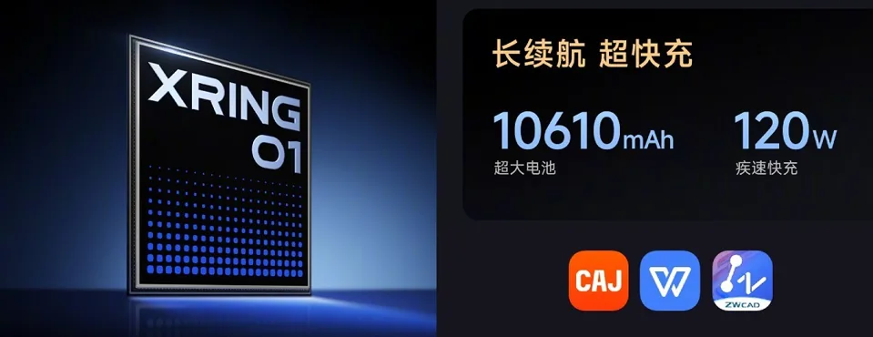

The Xiaomi Pad 7s Pro features a 12.5-inch LCD display and a 50MP rear camera.
Xiaomi has announced the Xiaomi Pad 7s Pro alongside the Mix Flip 2. This is the second tablet from the brand to be powered by the company’s in-house Xring O1 chipset. It comes in a sleek design with flat sides and rounded edges. The tablet features a 12.5-inch display with a refresh rate of 144Hz. It is equipped with a 10,610mAh battery with support for 120W fast charging. The Xiaomi Pad 7s Pro is just 5.8mm thick but is on the heavier side, weighing 576 grams. This heft can be accounted for by the large display and the big battery. The device sports a 12.5-inch panel with 3.2K resolution. This is a 144Hz LCD panel, unlike the OLED panel on the more premium Pad 7 Ultra.
The tablet is equipped with the Xring O1 chipset, which is a deca-core processor based on a 3nm manufacturing process and clocked at up to 3.4GHz. The chipset is coupled with up to 16GB of RAM and 1TB of onboard storage.
On the rear of the tablet is a 50MP sensor with support for 4K video recording, while at the front, it gets a 32MP camera for selfies. The tablet features six Dolby Atmos-powered speakers and a total of four microphones. Connectivity options on this device include Wi-Fi 7, Bluetooth 5.4, and USB Type-C. The Xiaomi Pad 7s Pro is powered by a big 10,610mAh battery with support for 120W wired charging and 7.5W wired reverse charging.